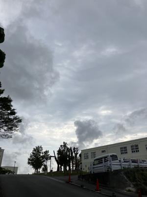
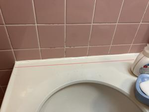
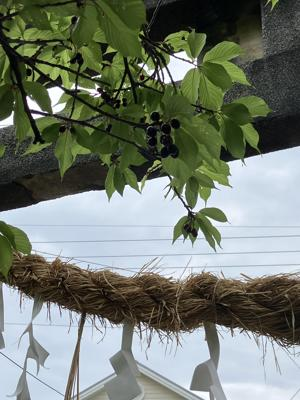

うるがいの話 ある日
最新: やろうと思っていた【うるがいの話 ある日】とは 一日だけのプログです
『うるがいの話』の最新一日だけのプログで、通信料が少なく経済的だ。カニの画像をクリックすると全ての日付が載る『うるがいの話』サイトを表示します
|
|
【うるがいの話】 うるがい(ｳﾙｶﾞｲ urugai)とは、『もずくがに』の名前でとても大きくなります。 |
|---|---|
|
|
【カミマヤーの話】 猫のことを方言でマヤーといいます。カミマヤー（kamimayaa）とは、神の猫のことです。 |
|
【たながぁの音楽】 たながぁ（ﾀﾅｶﾞｰ tanagaa）とは手長えびのことで、何種類かあり大きいのは車 エビぐらいになります。 |

|
【ぶながぁの話】 ぶながぁ(ﾌﾞﾅｶﾞｰ bunagaa)とは、赤い髪の毛、赤い身体、そして身長は１ｍ２０ｃｍ ぐらい、川の蟹を食べているの目撃された。場所は沖縄県国頭郡大宜味村のと ある村僕の隣近所に住んでいる爺さんから、聞いた話です。 |
|
|
【ギーマの話】 ギーマ(giima)とは、山原の里山に咲くスズランに似た、 花を付けます。実は食べられます、 気が付くと口の周りが紫になっています。 |
2026年03月25日 (水）やろうと思っていた
15:59

洗面化粧台と壁との隙間が目立っていたので、バスボンドで隙間
をコーティングした。写真は、コーティングした後

バスボンドは、３年前の２０２２年９月に購入しそのまま放置し
たままだった。腰が重たい人！。あ、腰は、完治ではないが今朝
から、かなり改善しています。日々の腰痛対策体操の鍛錬の効果
です。
外務省は２３日夜、全世界を対象に、海外に渡航・滞在する邦人
に対し、中東情勢の緊迫化に伴う広域情報を出した。
ふーん、でも行かねばならないのですよ。と、「入国カード」オ
ンライン申請を行った。去年の手順メモに従って、ン！、微妙に
画面が違う。
台湾「入国カード」オンライン申請で
到着予定日の入力が、できません
なぜですか
①入力可能期間外になっている
台湾のオンライン入国カードは
👉 到着予定日の「3日前から当日まで」しか入力できません
え！、なんと運用が変更になっている。
２０２５年１０月１日（水）より、従来の紙の入国カードは廃止
され、オンライン入国カードへと一本化されました。台湾到着日
を含む３日前から登録可能で、出発日の前々日になったら移民署
の入国カード登録用サイトから登録します。
なんと、台湾到着後、紙の入国カードを書いていた人達をたくさ
んみかけたが・・・・。なお、問い合わせはchrgptです。あ、
claudeにすれば良かったかも。

識名宮の完熟サクランボ